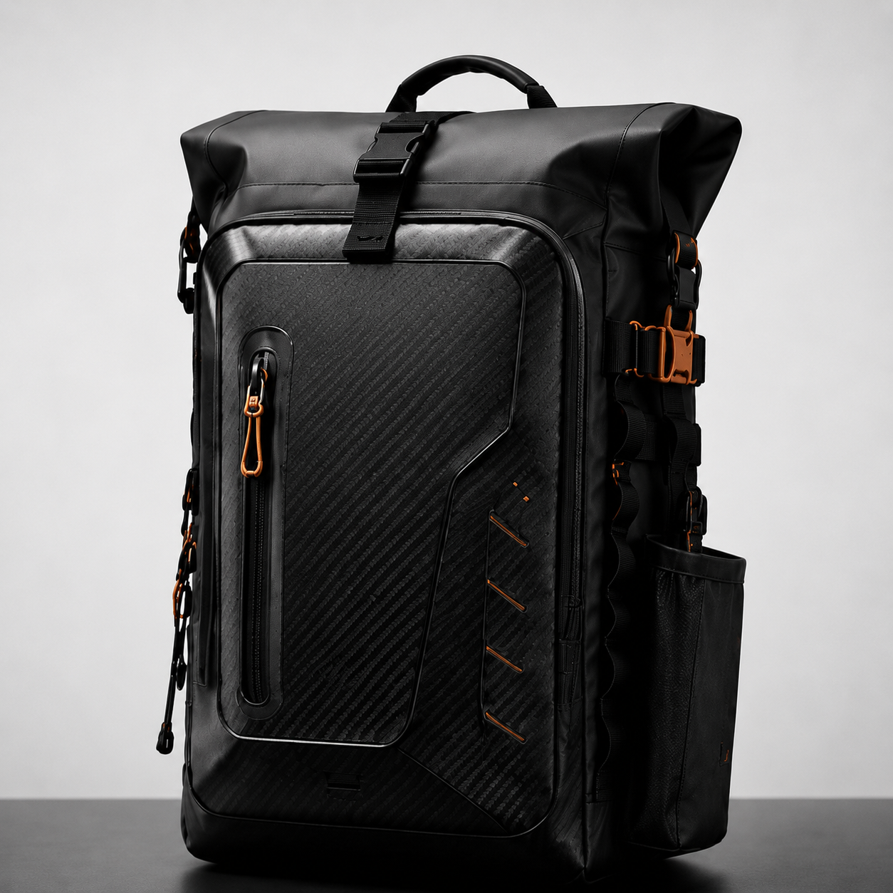

Remove compromise
Every part must justify its weight, position and purpose under pressure.

KAIZURO ASSAULT · PE6-8
A new offshore casting rod created for anglers who refuse to accept the usual compromises.
Why KAIZURO Exists
Heavy offshore casting rods are often defined by compromise. Strength adds weight. Power can diminish recovery. Comfort is treated as secondary until the fight proves otherwise.
KAIZURO began by challenging those assumptions. The aim was not to decorate a blank, but to create a complete load-bearing system around casting control, pressure, and endurance.
KAIZURO means over-engineered on purpose.

Project Elite 01
The first physical expression of the KAIZURO philosophy. Designed for high-output topwater casting, serious offshore load and the violent opening phase of a fight.
Designed to cast. Built to load. Engineered to recover.Product Philosophy
Every part must justify its weight, position and purpose under pressure.
Static load, destructive testing and offshore feedback guide decisions.
Prototype learning is carried forward before production is opened.

Guide Architecture
Guide selection is not a finishing decision. Frame geometry, ring size, spacing and wrap construction influence line flow, load transfer and finished weight.
Developed as part of the rod. Not added afterward.Design Details
Heavy offshore guides must withstand impact, repeated loading and lateral force without unnecessary bulk.
01 / 03

Grip Geometry
The upper grip is built for usable leverage, confident indexing and comfort during heavy offshore pressure. Its form is meant to guide the hand before load arrives.


Reel Interface
The reel seat is where rod, reel and angler become one load-bearing system. ASSAULT uses a heavy-duty Fuji DPS configuration selected for offshore reliability.
Fuji DPS component shown before installation. Secure retention. Proven serviceability.Physical Proof
Prototype decisions are tested against load, recovery and the structure’s ability to keep working after force is applied. The point is not a laboratory headline; it is confidence offshore.
Prototype Evolution
Set the target around offshore casting pressure.
Create the first physical ASSAULT prototype.
Push the blank and component system under measured force.
Record where weight, feel and transition geometry need refinement.
Improve grip, guide path, reel interface and finishing choices.
Move proof from controlled testing into offshore conditions.
Open the Founder 100 allocation only after the platform earns it.
Founder 100
Founder 100 is the first production allocation for ASSAULT. It is built for anglers who want the rod, the proof and the identity of being there before the wider release.

Commercial Terms
Founder 100 is limited to the first one hundred ASSAULT production rods.
Allocation is secured through the agreed Founder reservation process before production confirmation.
Founder members receive direct development and production updates before wider public release.
HALO PE10-12
HALO is the future KAIZURO chapter: a heavier PE10-12 platform for giant GT, very large tuna and expedition pressure. The same philosophy, carried further.
Follow HALO developmentFollow the build